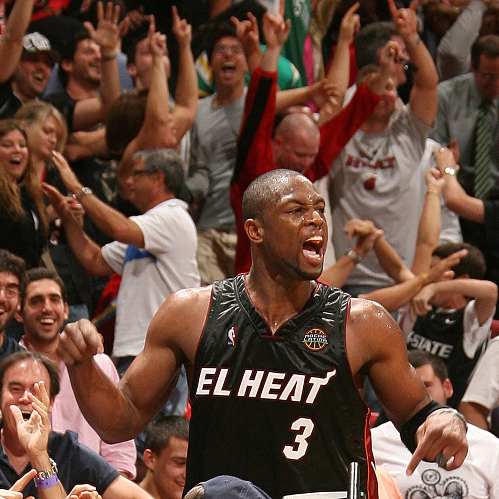

Miami Heat — АҚШ-тың Флорида штатындағы Майами қаласында орналасқан кәсіби баскетбол командасы. Олар Ұлттық баскетбол ассоциациясының (NBA) Шығыс конференциясына кіреді және 1988 жылы құрылған. Команда қысқа уақытта лиганың ең танымал және табысты клубтарының біріне айналды. Miami Heat өз ойындарын Kaseya Center аренасында өткізеді, ол жанкүйерлердің ерекше атмосферасымен белгілі.
Команданың тарихында бірнеше жұлдызды дәуірлер болды. Ең танымалы — 2000-2010 жылдар аралығы, бұл кезде команданы легенда атанған Дуэйн Уэйд бастап жүрді. 2006 жылы Уэйд пен Шакил О’Нилдің серіктестігі командаға алғашқы чемпиондық титул әкелді. 2010 жылы клубқа әйгілі Леброн Джеймс пен Крис Бош қосылып, «Үлкен Үштік» дәуірі басталды. Нәтижесінде Miami Heat 2012 және 2013 жылдары қатарынан екі рет чемпион атанды.
Кейінгі жылдары команда қайта құру кезеңінен өтсе де, Эрик Споэльстра баптаған жүйе мен мықты тәртіп арқасында жоғары деңгейде қалуды жалғастырып келеді. 2020 және 2023 жылдары Heat күтпеген жерден финалға дейін жетіп, өздерінің «мәдениет» деп аталатын ерекше тәртіп, еңбекқорлық және командалық рухқа сүйенетін философиясын дәлелдеді. Бүгінде Miami Heat NBA-дағы ең еңбекқор, төзімді және жанкүйері көп командалардың бірі болып саналады.

Miami Heat тарихындағы ең мықты ойыншы — Дуэйн Уэйд (Dwyane Wade) деп саналады. Ол 2003 жылы клубқа қосылып, команданың аңызына айналды. Уэйд Heat үшін 3 рет NBA чемпионы болды (2006, 2012, 2013) және 2006 жылғы финалда керемет ойын көрсетіп, командаға алғашқы чемпиондықты алып берді.
Уэйд өзінің жарылғыш atletизмiмен, корттағы батылдығымен және шешуші сәттерде ерекше ойнай алуымен танылды. Ол — клуб тарихындағы ең көп ұпай жинаған, ең көп пас пен блок жасаған ойыншы. Miami Heat жанкүйерлері оны «Flash» деп атайтын, ал оның №3 жейдесі мәңгілікке клубтан retirada етілген.